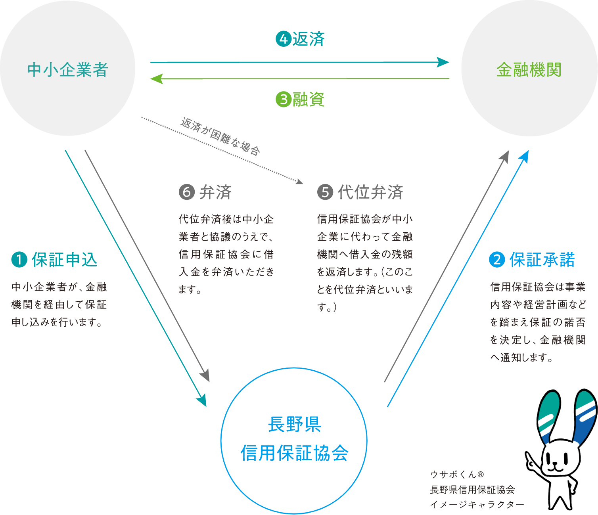

ABOUT US長野県信用保証協会とは
ABOUT US長野県信用保証協会とは
私たちの役割
信用保証協会は、信用保証協会法に基づいて設立された公的機関です。
中小企業・小規模事業者のお客様が金融機関から事業資金を借入する際に「公的な保証人」となり、資金調達をサポートしています。万が一返済できなかった場合には、金融機関に立替払い（代位弁済）することを約束します。中小企業の事業資金について「公的保証人」となれるのは、信用保証協会だけ。協会は全国に51（47都道府県＋横浜市、川崎市、岐阜市、名古屋市）あり、長野県信用保証協会はそのひとつです。
信用保証制度のしくみ

中小企業者が信用保証協会を利用するメリットって？
- 金融機関から融資が受けやすくなる
- 地方公共団体の低金利な融資制度を利用できる
- 無担保、第三者保証人不要で融資が受けられる
- 各種支援サービスを無料で受けられる
基本理念
私たち長野県信用保証協会は信用保証により
明日を拓く中小企業を力強くサポートし
長野県の洋々たる発展の一翼を担う
数字で見る長野県信用保証協会
長野県内の
中小企業者のご利用率
50.3%※2022年3月時点
保証債務残高
78,941件
7,481億円※2022年3月時点
職員数
138名※2022年3月時点
年間休日
120日※2022年3月時点
月平均残業時間
3.7時間※2022年3月時点
3年以内新卒離職率
0%※2022年3月時点
有給取得率
14.3日※2022年3月時点
育児休業復職率
100%※2022年3月時点